#===============================================================================
# Load Packages and Datums
# Some call "it" Data, I like to call them Datums
#=============================================================================80
library(ggplot2)
library(dplyr)
datums <- read.csv("~/Jeff/rSpace/Data/crabDatums1950To2016.csv")#===============================================================================
# Bar Graph All Years by State
#=============================================================================80
ggplot(datums, aes(x = State, y = PoundsMillion, fill = State)) +
theme(legend.position = "none") +
ggtitle("Total Blue Crab Landings by State
\nFrom 1950 to 2016 in Millions of Pounds\n") +
theme(plot.title = element_text(size = 13, hjust = .5)) +
geom_bar(stat = "identity")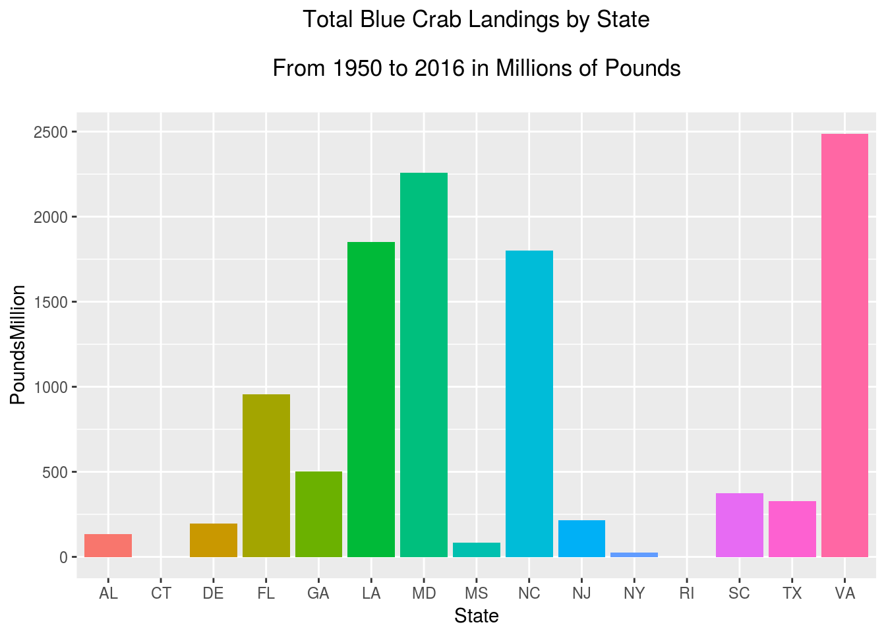
#===============================================================================
# Bar Graph Selected Years by Selected States
#=============================================================================80
ggplot(subset(datums, State %in% c("MD", "LA", "VA", "NC") & Year >= 2007),
aes(x = Year, y = PoundsMillion, fill = State)) +
ggtitle("Landings by Top States 2007 to 2016") +
theme(plot.title = element_text(size = 13, hjust = .5)) +
geom_bar(position = "dodge", stat = "identity")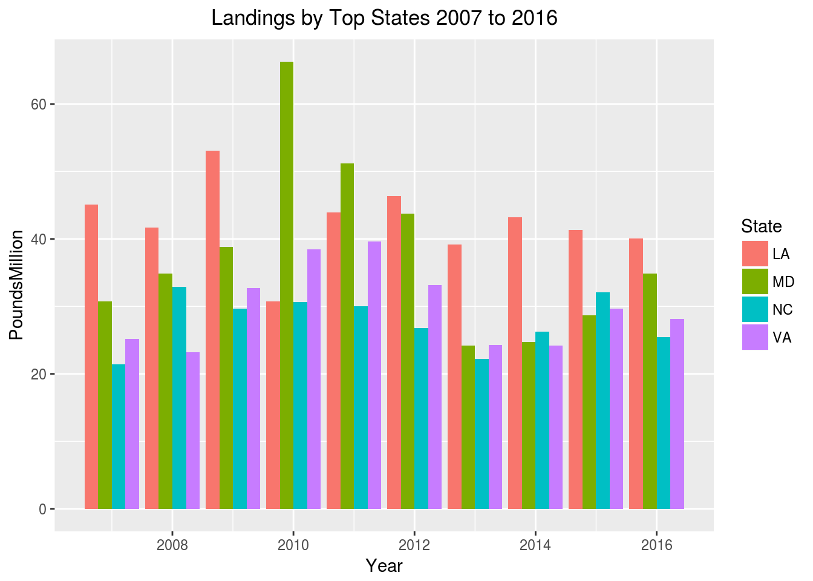
#===============================================================================
# Area Graph All Years by Selected States
#=============================================================================80
ggplot(subset(datums, State %in% c("MD", "LA", "NC","VA")),
aes(x = Year, y = PoundsMillion, fill = State)) +
ggtitle("Landings by Top States 1950 to 2016") +
theme(plot.title = element_text(size = 13, hjust = .5)) +
geom_area()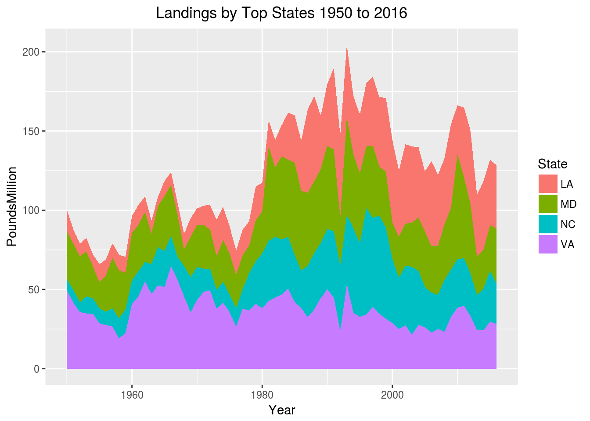
#===============================================================================
# Line Graph All Years by Selected States
#=============================================================================80
ggplot(subset(datums, State %in% c("MD", "LA", "NC","VA")),
aes(x = Year, y = PoundsMillion, color = State)) +
ggtitle("Landings by Top States 1950 to 2016
\n(ok, but a bit busy this way)\n") +
theme(plot.title = element_text(size = 13, hjust = .5)) +
geom_line()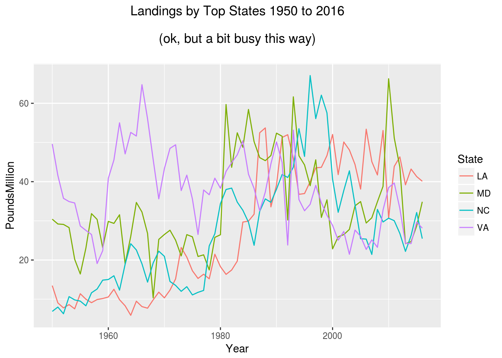
#===============================================================================
# Faceted Lines All Years by Selected States
#=============================================================================80
ggplot(subset(datums, State %in% c("MD", "LA", "NC","VA")),
aes(x = Year, y = PoundsMillion, color = State)) +
ggtitle("Landings by Top States 1950 to 2016
\n(facets can be easier to read sometimes)\n") +
theme(plot.title = element_text(size = 13, hjust = .5)) +
geom_line() +
facet_wrap(~State)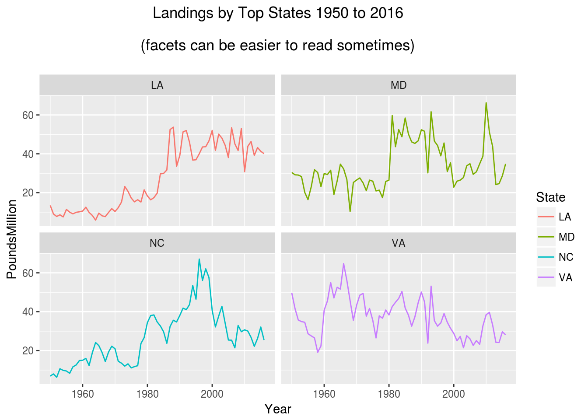
#===============================================================================
# Points or Scatter Plot All Years by Selected States
#=============================================================================80
ggplot(subset(datums, State %in% c("LA", "MD")),
aes(x = Year, y = PoundsMillion, color = State)) +
ggtitle("Trends: Maryland vs Louisiana 1950 to 2016
\n(oh no... is Louisiana is beating us?)\n") +
theme(plot.title = element_text(size = 13, hjust = .5)) +
geom_point() +
geom_smooth()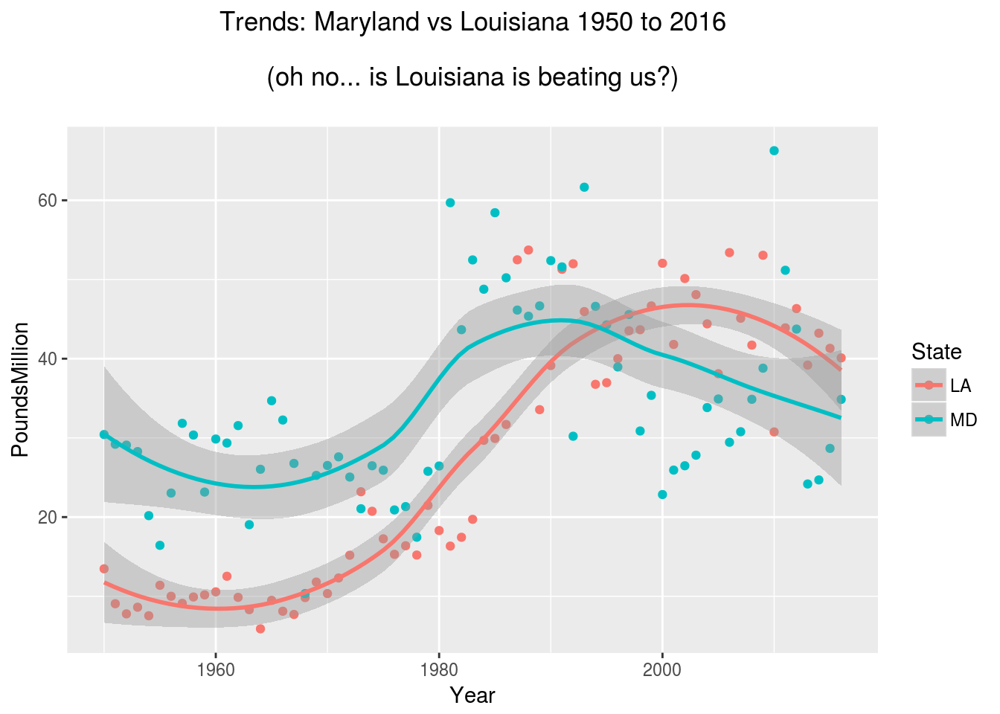
#===============================================================================
# Faceted Scatter Plot All Years by Selected States
#=============================================================================80
ggplot(subset(datums, State %in% c("LA", "MD", "VA", "NC")),
aes(x = Year, y = PoundsMillion, color = State)) +
ggtitle("Trends Faceted: Top States 1950 to 2016") +
theme(plot.title = element_text(size = 13, hjust = .5)) +
geom_point() +
geom_smooth(span = 0.8) +
facet_wrap(~State)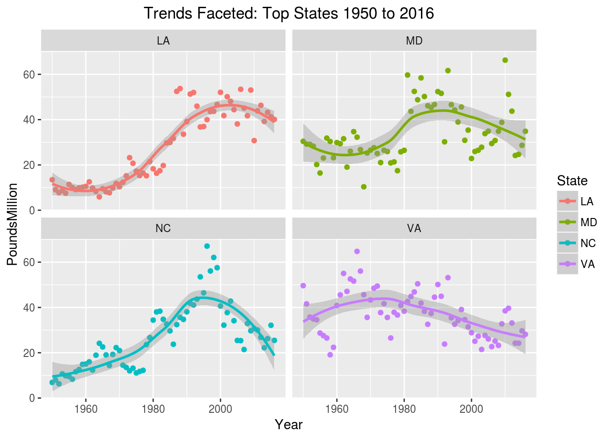
#===============================================================================
# Jitter All Years by Selected States by Region
#=============================================================================80
ggplot(subset(datums,
State %in% c("MD", "VA", "NJ", "FL", "LA", "NC", "SC","TX")),
aes(x = Region, y = PoundsMillion)) +
theme(legend.position = "right", axis.text = element_text(size = 6)) +
ggtitle("Jitter Selected States by Region 1950 to 2016
\n(later we'll make interactive with ggplotly)\n") +
theme(plot.title = element_text(size = 13, hjust = .5)) +
geom_point(aes(color = State), alpha = 0.5, size = 2,
position = position_jitter(width = 0.25, height = 0))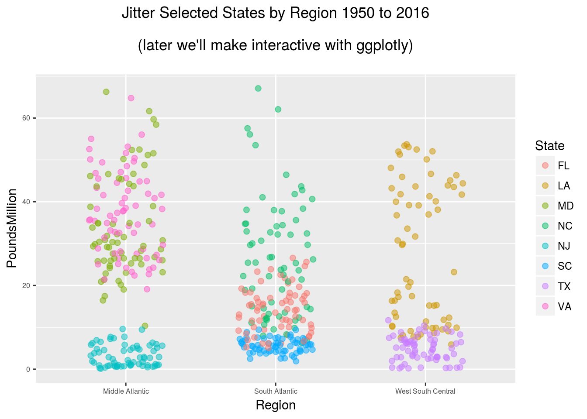
#===============================================================================
# Create a subset for below
#=============================================================================80
datumsSub <- (datums %>%
group_by(Year, State) %>%
summarize(PoundsMillion = sum(PoundsMillion)) %>%
filter(Year >= "2005" & Year <= "2016",
State == "MD"| State == "LA" | State == "VA"))#===============================================================================
# Density Selected States 2005 to 2016
#=============================================================================80
ggplot(datumsSub, aes(x = PoundsMillion, group = State, fill = State)) +
ggtitle("Distribution(density): Selected States 2005 to 2016") +
theme(plot.title = element_text(size = 13, hjust = .5)) +
geom_density(adjust = 1.5 , alpha = 0.1)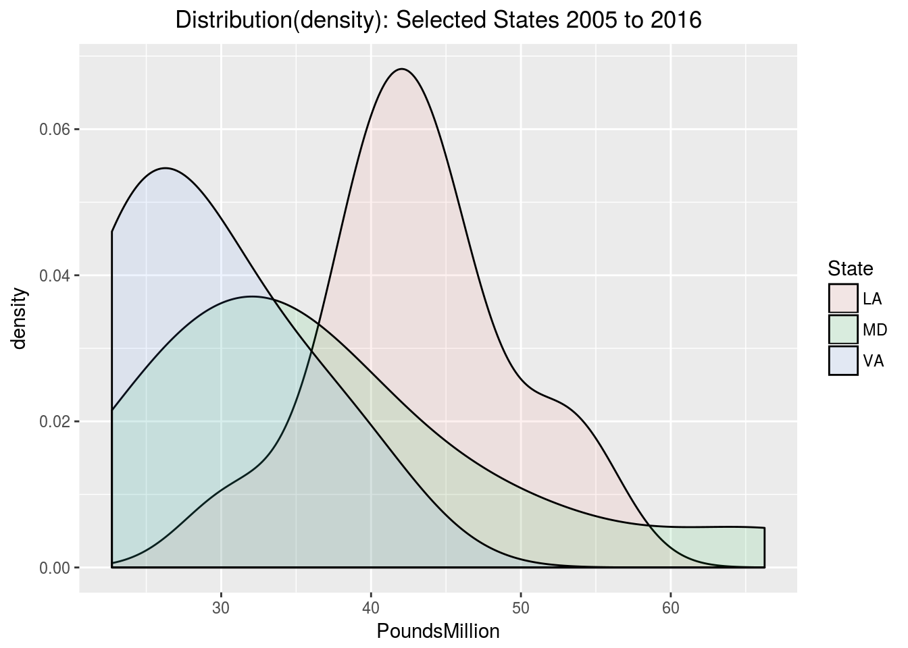
#===============================================================================
# Histogram Selected States 2005 to 2016
#=============================================================================80
ggplot(datumsSub, aes(PoundsMillion)) +
ggtitle("Distribution(histogram): Selected States 2005 to 2016") +
theme(plot.title = element_text(size = 13, hjust = .5)) +
facet_wrap(~State, scales = 'free_x') +
geom_histogram(binwidth=7)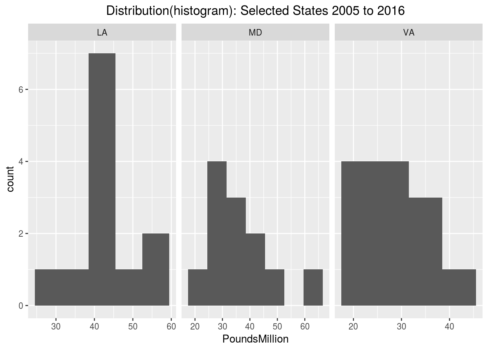
#===============================================================================
# Freqpoly Selected States 2005 to 2016
#=============================================================================80
ggplot(datumsSub, aes(PoundsMillion, colour = State)) +
ggtitle("Distribution(freqpoly): Selected States 2005 to 2016") +
theme(plot.title = element_text(size = 13, hjust = .5)) +
geom_freqpoly(binwidth = 7)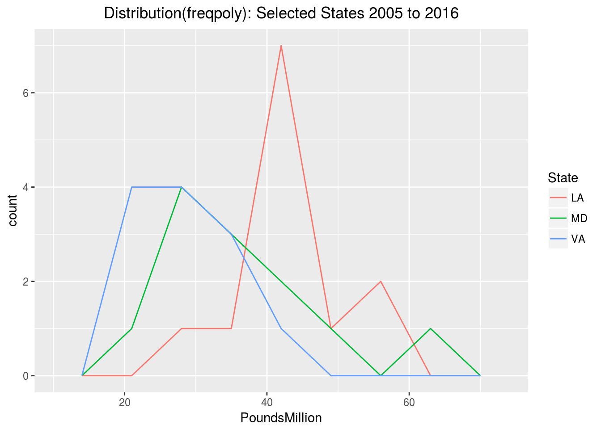